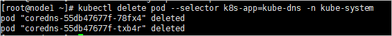
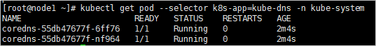
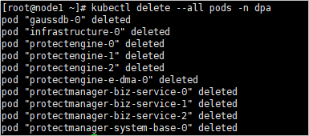
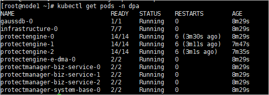

This section describes how to set the system time. With correct system time, you can accurately determine the alarm generation time based on alarm logs. You can synchronize the client time to the system and set Network Time Protocol (NTP) automatic synchronization or manually change the system time. After configuring the device time, you must restart all OceanProtect services. Otherwise, data protection jobs will fail to be delivered.
Prerequisites
- You have configured the NTP server before synchronizing the time with the NTP server time. For details about how to configure the NTP server, see Configuring the DNS Service (Applicable to the OceanProtect E6000 Appliance).
- To synchronize time with an NTP server in an environment with a firewall configured, port 123 must be enabled.
Context
- NTP is a protocol that synchronizes the time of a computer system to Universal Time Coordinated (UTC). Servers that support NTP are called NTP servers.
- By synchronizing the client time, you can adjust the system time to be consistent with the client time.
- By configuring the NTP automatic synchronization, you can periodically and automatically synchronize a device with the NTP server which serves as an external time source.
Precautions
Changing the device time may cause the following impacts:
- If the device time is later than the license expiration date, the license may become invalid.
- If the device time is later than the certificate expiration date, the certificate will expire.
- If the device time is later than the user-defined password expiration date, the system may force users to change the login password.
- If the device time is later than the deadline for saving historical performance data, the system will no longer save historical performance data.
- Changing the device time affects BBU modules' lifespan and may trigger alarms indicating that a BBU module's life expires or is aged.
Procedure
- Choose Settings > Time Settings to set the device time.
Use one of the following methods to set the device time:

Set the correct time zone and time. Otherwise, the time recorded in alarms or logs may be different from the actual time, affecting fault locating.
- Manual
- Click Modify and select Change manually.
- Set the device time and time zone.
- In the time area, change the device time and click OK.
- Select the time zone where the device is located from the Time Zone drop-down list box.
- Click Save.
The security alert dialog box is displayed.
- Confirm the information in the dialog box, select I have read and understand the consequences associated with performing this operation, and click OK.
- Synchronize with the client time.
- Click Modify and select Synchronize with client time.
- If the time zone ID cannot be obtained, DeviceManager displays Client Time Zone. Specify Client Time Zone, which is the time zone where the current client resides.
- Click Save.
The security alert dialog box is displayed.
- Confirm the information in the dialog box, select I have read and understand the consequences associated with performing this operation, and click OK.
- Set automatic NTP synchronization.
- Click Modify and select Synchronize with NTP server time.
- In NTP Server Address, enter the IPv4 address, IPv6 address, or domain name of the NTP server.
- A maximum of two NTP servers can be added. If the system cannot synchronize the time from one NTP server, it synchronizes the time from the other one.
- Ensure that the time of the two NTP servers is consistent.
- (Optional) Click Test.
- Set NTP Authentication to Enable.
- NTP authentication can be enabled only when NTPv4 or later is used. After authentication, the NTP server automatically synchronizes the time to the storage device.
- After NTP authentication is enabled, you need to import the CA certificate.
- In Time Zone, select a time zone.
- Click Save.
The security alert dialog box is displayed.
- Confirm the information in the dialog box, select I have read and understand the consequences associated with performing this operation, and click OK.
- Manual
- Restart all services of the OceanProtect.
- Use PuTTY to log in to the host as user root through the management IP address.
- Run the following command to restart the kube-dns service:
kubectl delete pod --selector k8s-app=kube-dns -n kube-system
The command output is as follows:

Run the following command to check the status of the kube-dns service. If the service status is Running, the kube-dns service is restarted successfully.kubectl get pod --selector k8s-app=kube-dns -n kube-system
The command output is as follows:

- Run the following command to restart all data backup feature containers:
kubectl delete --all pods -n dpa
The command output is as follows:

- Run the following command to check whether all pods are started:
kubectl get pods -n dpa
The command output is as follows:

If all pods are in the Running state, the service is restarted successfully. This process takes about 5 to 10 minutes.